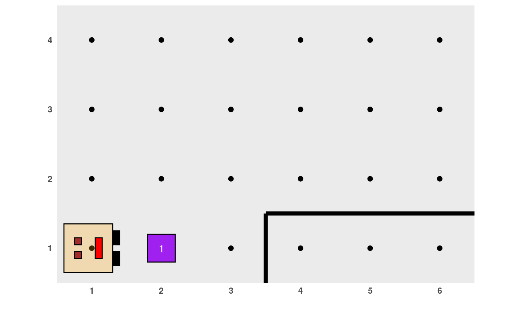

Esta función toma un "mundo" (es decir, una lista con información acerca de su tamaño, paredes, "cosos" presentes y la ubicación y dirección de Karel), lo grafica y prepara todo para que Karel pueda realizar sus acciones. Siempre debe ser evaluada antes de que Karel empiece a cumplir sus objetivos, en especial, si en algún momento hemos cometido un error, debemos comenzar de nuevo corriendo primero esta función.
generar_mundo(mundo)Un caracter de largo 1 indicando el nombre de uno de los mundos que ya vienen en el paquete o un objeto de tipo lista con todos los componentes que debe tener un mundo (ver más abajo en Detalles).
Dibuja el estado inicial del mundo de Karel y deja todo preparado para comenzar a registrar sus acciones.
Luego de correr generar_mundo(), se ejecutan las acciones de Karel y
se pueden visualizar con la función ejecutar_acciones().
El argumento mundo puede consistir de un mundo creado (es
decir, inventado) por cualquiera. En este caso, mundo debe ser una
lista con los siguientes componentes:
nx: TODO
ny:
hor_walls:
ver_walls:
karel_x:
karel_y:
karel_dir:
beepers_x:
beepers_y:
beepers_n:
beepers_bag:
generar_mundo("mundo001")
